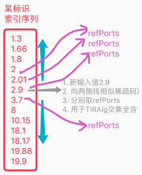
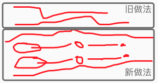

AI系列之《2021.12：螺旋架构进入 TC 执行链》

来源：HELIX_THEORY/手稿/assets/569_相近匹配工作流程.png

来源：HELIX_THEORY/手稿/assets/596_决策水流示图.png
来源：Note24.md、Note25.md
这一阶段的核心，是把螺旋架构从“能解释决策”推进到“能贯通计划、方案、行动”的 TC 链条。手稿先后整理了流程控制、TCPlan、TCSolution、TCAction，再转入 hSolution，并把反省拆分为理性反省与感性反省。
这不是简单拆模块，而是把“预测、评价、执行、反馈”从同一团逻辑里分离出来。理性反省更像对方案结构、时序与可行性的检查；感性反省更贴近价值、危险、收益等 mv 方向的评估。二者分裂后，系统才有机会在复杂任务中同时处理“这条路通不通”和“这条路值不值得走”。
阶段意义：TC 不再只是输出动作，而开始形成从计划到行动的多层控制结构。